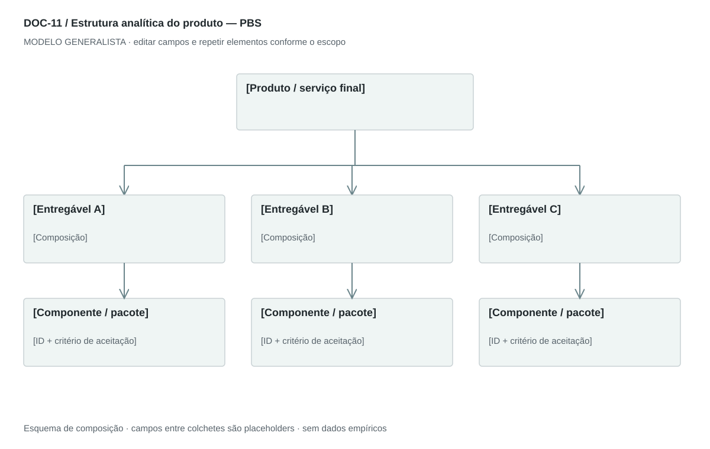

DOC-11 / Biblioteca documental generalista
Estrutura analítica do produto — PBS
Decompor o resultado a entregar em componentes verificáveis, independentemente do setor.
Modelo de investigação. Não representa uma análise concluída. Campos vazios devem permanecer identificados; não inventar dados para completar figuras.
Estrutura editorial
Uma árvore paisagem + dicionário de componentes em retrato. Usar substantivos para entregáveis e deixar atividades no WBS.
Visual previsto

Raiz do produto ou serviço, ramos de componentes e folhas verificáveis. Linhas contínuas significam composição; outras dependências vão para tabela separada.
Imagens: Diagrama de árvore obrigatório; imagem técnica ou foto de componente só quando necessária à identificação. Serviço pode ter entregáveis como diagnóstico, sessão e relatório.
Dicionário de dados
| Campo | Tipo | Dado necessário |
|---|
| componente_id | referencia | Identificador estável do entregável |
| parent_id | referencia | Componente superior; null para a raiz |
| nivel | inteiro | Profundidade na decomposição |
| nome | texto | Entregável descrito por substantivo |
| descricao | texto | Escopo incluído e excluído |
| criterio_aceitacao | texto | Condição verificável de conclusão |
| interface | texto | Relação com outras partes |
| verificacao | texto | Método e evidência necessária para aceitar |
Todos os registros precisam de classificação, fonte, localização, datas, confiança e limitação. Números também precisam de unidade, moeda quando aplicável e período.
Modelo preenchível
Os quadros amarelos podem ser editados nesta página para impressão. Edições não são gravadas automaticamente: use o Markdown/JSON para manter uma versão ou imprima em PDF após editar.
[Negócio] · [Versão] · [Data-base] · [Autor] · [Audiência] · [Território]
Pergunta decisória: [A preencher]
Escopo: [A preencher]
1. Produto ou serviço final
Defina o resultado aceito pelo cliente e as fronteiras.
[Análise + evidência + implicação + lacuna]
2. Decomposição
Organize entregável → parte → subparte, com parent_id e nível.
[Análise + evidência + implicação + lacuna]
3. Dicionário dos componentes
Descrição, interface, critério de aceitação e evidência de verificação.
[Análise + evidência + implicação + lacuna]
4. Dependências
Mostre integrações e partes externas sem confundir relação de composição com dependência.
[Análise + evidência + implicação + lacuna]
5. Cobertura
Cheque que toda entrega prometida está representada e que nada foi duplicado.
[Análise + evidência + implicação + lacuna]
Decisão e próximo passo
[Decisão e justificativa]
[Alternativa considerada]
[Condição de reversão]
[Ação, responsável, prazo e critério]
Fontes e limites
[Fonte + localização + datas + o que sustenta + limitações]
Critérios de revisão
- A hierarquia não contém ciclos ou órfãos.
- Cada folha é verificável e não é uma lista vaga de tarefas.
- Não transportar módulos tecnológicos do exemplo.
Estudo do arquivo original
DOC-11-fonte.pdf — Duas páginas retrato com tabelas rasterizadas de quatro níveis e cabeçalhos cinza. A estrutura mistura sistema completo, subsistemas, funções e descrições. A segunda página contém duas imagens de continuação. Números hierárquicos apoiam a navegação.
Observação do original e adaptação recomendada são camadas distintas. Nomes, preços, localidades, contatos e conclusões do caso-fonte não devem preencher a nova análise.